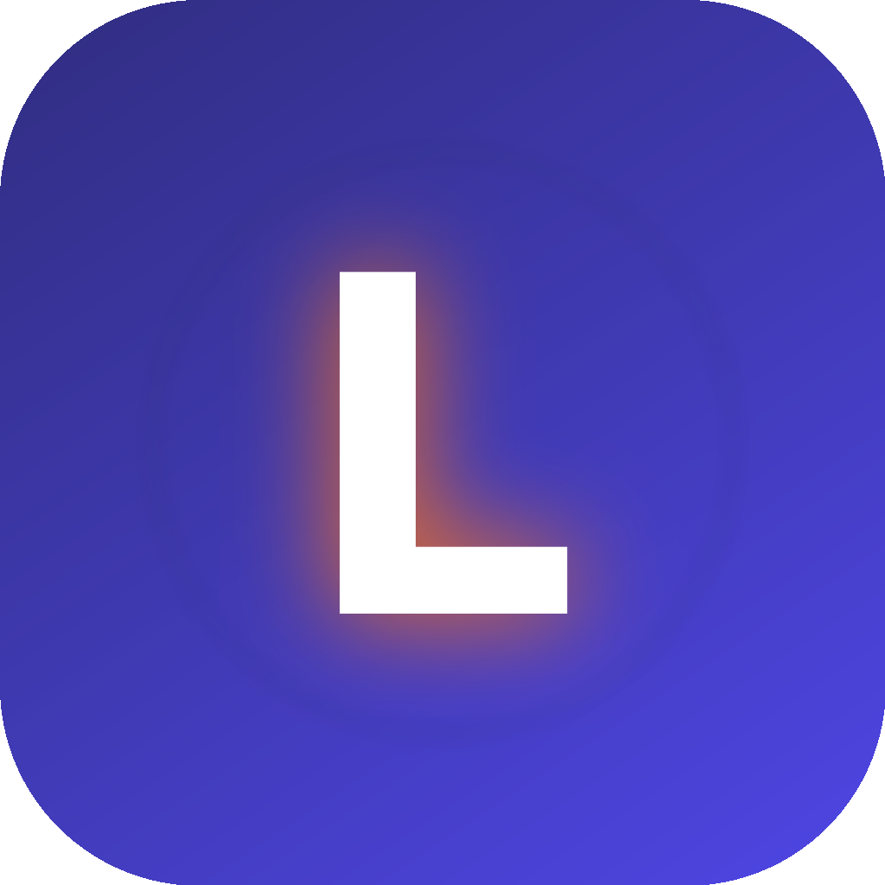
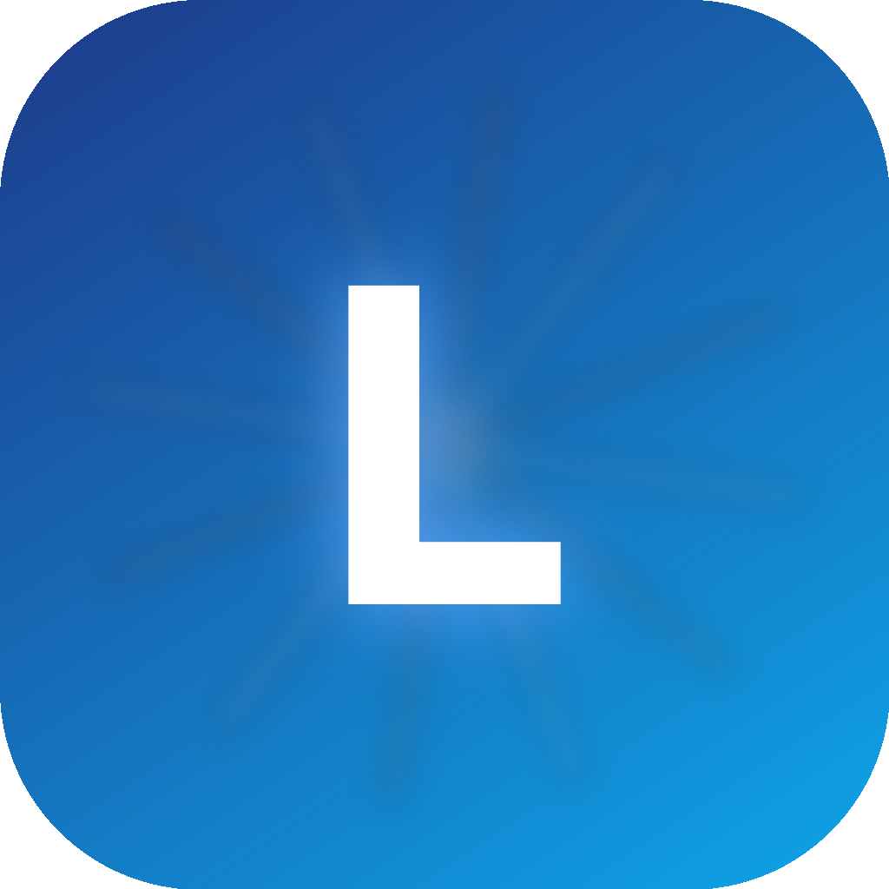
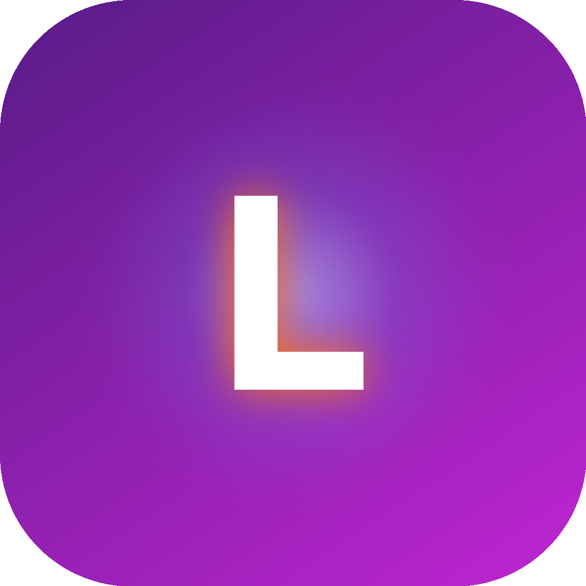

L 光晕
白 L 衬在深靛到靛蓝渐变上，橙色光晕向四周弥散，外圈有淡蓝光环。
弥散光 · 光晕基于 Luminous Signal 设计哲学的三版带字母 L 的图标方案
以光为语言：字母 L 作为信标，周围色彩弥散成氛围，避免纯黑背景，用深饱和色替代。
光晕、散射光、弥散光等元素被有意识地克制使用，确保在小尺寸 Dock/启动台中依然清晰可辨。

白 L 衬在深靛到靛蓝渐变上，橙色光晕向四周弥散，外圈有淡蓝光环。
弥散光 · 光晕
从 L 背后向外散射 12 道光束，深蓝到天空蓝背景，像状态指示灯在发光。
散射光 · 发光
L 叠加在蓝紫光球核心前，橙色描边光晕让字母从背景中浮起。
发光 · 弥散光